Describe culture
Distinguish material and nonmaterial culture and explain how culture becomes taken for granted.
How symbols, language, values, norms, and technology turn a shared world into a social reality.
Distinguish material and nonmaterial culture and explain how culture becomes taken for granted.
Analyze symbols, gestures, language, values, norms, sanctions, and subcultures.
Apply diffusion, cultural leveling, innovation, and cultural lag to technology.
Compare functionalist, conflict, and interactionist explanations of the same cultural pattern.
Thirty-eight years after her first diary entry, Eleanor is fifty-four. The Great Depression has changed the city’s rhythms. Factories are quiet, families double up, mutual-aid kitchens stretch thin supplies, and displaced workers travel in search of wages. Economic collapse is also a cultural crisis: people argue about deservingness, dignity, leadership, obligation, and what neighbors owe one another.
A freight train is material culture; the meanings attached to a traveling worker are nonmaterial culture. A bread line is a physical arrangement; whether it signifies shame, shared responsibility, or failed institutions depends on values and social power.
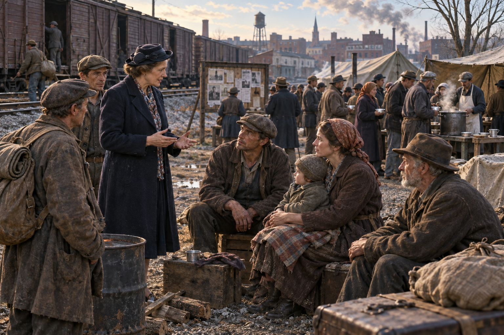
Historically, hobo commonly referred to a mobile worker, while tramp and bum carried different and often stigmatizing meanings. Actual lives did not fit neat labels: people traveled for work, fled violence, followed harvests, rode freight, stayed in camps, relied on kin, or became stranded by economic collapse. The label shaped how police, employers, charities, newspapers, and towns treated them.
Popular charts claim travelers marked homes or towns with symbols meaning food, danger, kindness, or police. Some signs and word-of-mouth practices likely circulated, but evidence for one standardized national code is limited and later retellings may have expanded the legend. Treat the chart as folklore to investigate, not a settled dictionary.
Durkheim argued that complex societies depend on specialized, interdependent roles. When jobs disappear, the problem is not only lost income: connections among work, housing, family, health, education, and community weaken.
Rapid disruption can weaken shared expectations and leave people uncertain about rules, goals, and belonging. Anomie does not mean that poor people lack morals; it describes weakened social regulation and connection.
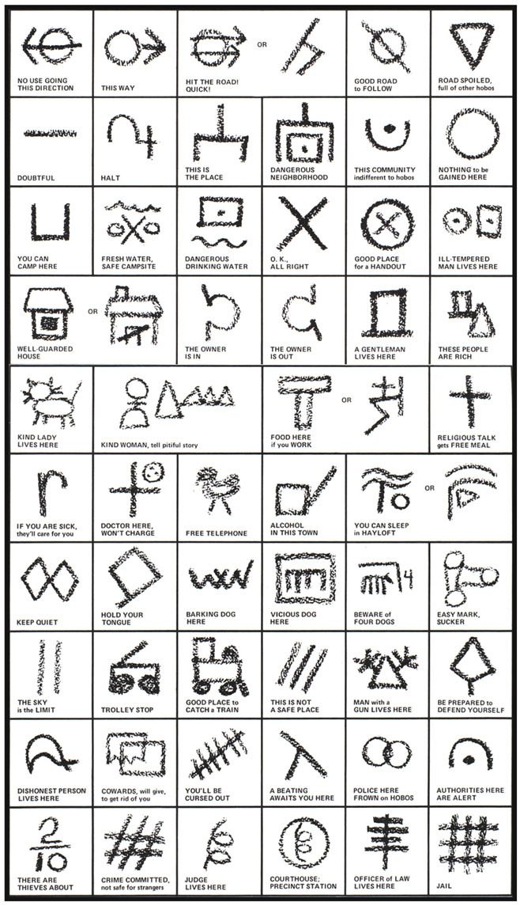
Situation: Eleanor learns that a kind household offers food for work, but police are watching the rail yard. Leave a message for a traveler arriving tomorrow.
Symbolic interactionism: the mark has no fixed social meaning by itself; people create, teach, and negotiate its meaning. Subculture: shared signs can help insiders coordinate while remaining unclear to outsiders. Power: danger, policing, work, food, and shelter shape which messages people urgently need.
Today’s homelessness reflects shortages of affordable housing, rent and income pressures, health and disability, family disruption, discrimination, disasters, and gaps in services. National point-in-time counts are useful but imperfect one-night estimates; hidden homelessness and housing instability are harder to count. The comparison to the 1930s should reveal institutional relationships, not pretend the periods are identical.
| Sociological lens | 1933 question | Present-day question |
|---|---|---|
| Functionalism | Which institutions failed to coordinate work, housing, relief, and family needs? | Where do housing, health, labor, education, and benefits fail to connect? |
| Conflict theory | Who controlled wages, property, relief rules, policing, and public narratives? | Whose interests shape zoning, rent, shelter policy, public space, and enforcement? |
| Interactionism | How did “hobo,” “deserving,” or “vagrant” labels change encounters? | How do language, visibility, signs, and daily interactions produce stigma or recognition? |
Leaders do not control culture by themselves, but they can frame a crisis, amplify solidarity or blame, model norms, direct resources, and turn values into policy. Public language that treats hardship as shared risk can support cooperation; language that reduces people to threats can normalize exclusion. Sociology therefore evaluates leadership by observable consequences: whose needs become visible, which institutions coordinate, who participates, and whether policy reduces harm.
Current comparison resources: HUD homelessness data and assistance resources and Pew analysis of housing costs and homelessness.
Culture is a group’s shared way of life: its language, knowledge, values, beliefs, norms, symbols, practices, and objects. Culture is not inherited biologically. People learn it through socialization, use it to interpret experience, and reproduce or revise it through interaction.
Physical objects and technologies people create and use: buildings, clothing, food, phones, roads, tools, artworks, and machines.
Example: Eleanor’s factory time clock records work hours.
Ideas and shared meanings: values, beliefs, norms, language, traditions, and expectations.
Example: The belief that a “good worker” is punctual gives the clock social power.
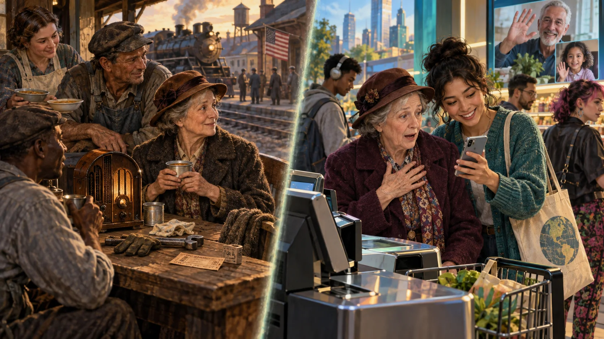
Culture supplies a taken-for-granted orientation to life. It tells people what counts as food, family, privacy, success, childhood, beauty, work, and even “common sense.” Because familiar meanings feel natural, sociologists practice making the familiar strange: they ask when a custom arose, who teaches it, who benefits, and how it differs elsewhere.
Disorientation when familiar cues no longer work. A visitor may not know how close to stand, how directly to speak, or what a gesture means.
Using one’s own culture as the standard for judging others. It can strengthen belonging but also produce misunderstanding and inequality.
Understanding a practice within its cultural context before evaluating it. This is a research stance, not a requirement to approve harm.
Ruth sees a family video-calling during dinner. Choose the response that best demonstrates cultural relativism.
This is ethnocentrism: Ruth uses the rules she learned as the only standard.
This is cultural relativism: first understand the practice in context. She may still evaluate harms after gathering evidence. Cultural relativism is not automatic approval.
This confuses understanding with approval. Sociologists can interpret a practice in context and still examine consent, harm, inequality, and human rights.
A symbol is anything that carries a shared meaning beyond itself. Words, flags, uniforms, emojis, rings, grades, gestures, and money work only because people learn what they signify. Meanings can vary across groups and change over time.
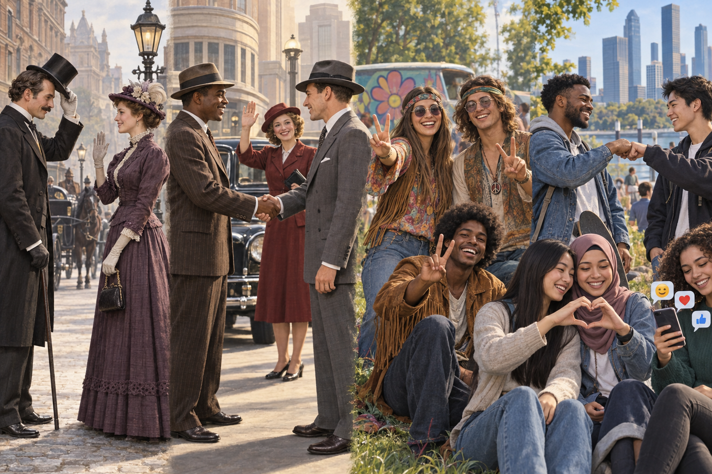
Could mark greeting, recognition, respect, gender expectations, or rank.
Often framed as trust, agreement, introduction, and respectable public conduct.
Became closely associated with peace activism, youth identity, and counterculture.
Greetings and emotions can move between embodied interaction and digital communication.
Sociological question: Who taught you the meaning of each gesture—and in what setting could the same movement be misunderstood?
Slang helps speakers signal age, place, friendship, taste, and group membership. The dates below show periods of especially visible use, not precise birth or death dates. Words overlap, return, and change meaning as music, migration, television, film, and social media carry them between groups.
| Expression | Visible eras of use | Meaning and social signal | What changed? |
|---|---|---|---|
| Bee’s knees | 1920s | Excellent or highly admired | Closely evokes a Jazz Age style today. |
| Cool | Mid-1900s–today | Controlled, fashionable, admirable, or acceptable | Spread widely across groups and became ordinary speech. |
| Hot | Multiple eras | Intense, popular, attractive, new, or controversial | Its meaning depends heavily on tone and context. |
| Dude | Late 1800s; revived repeatedly | Originally a sharply dressed man or outsider; later a casual form of address | Moved from social label to flexible greeting or reaction. |
| Bro | Late 1900s–today | Brother, friend, or a stereotyped masculine identity | Can express affection, irony, criticism, or disbelief. |
| Lit | Different meanings across eras; prominent online in the 2010s | Exciting, excellent, or highly energized | Digital circulation accelerated its movement across communities. |
| Slay | Longstanding verb; later praise in LGBTQ+ and Black communities; now widespread online | Perform exceptionally well or look impressive | A community expression entered mainstream popular culture. |
A system of symbols organized by rules. Language stores knowledge, coordinates action, expresses identity, and passes culture between generations.
Often associated with Sapir and Whorf, this idea proposes that language influences habitual perception and classification. Language shapes attention; it does not mechanically imprison thought.
Emoji, reaction buttons, verification marks, streaks, and follower counts condense social meaning. Platforms design some of these symbols and users negotiate the rest.
Choose a symbol—an emoji, uniform, flag, wedding ring, grade, or “like.” Explain its learned meaning, how an outsider might misread it, and who has power to stabilize or change its meaning.
Values are broad ideas about what is desirable, good, and important. Beliefs are ideas people accept as true. Values guide judgments; beliefs explain the world; norms translate both into expected conduct.
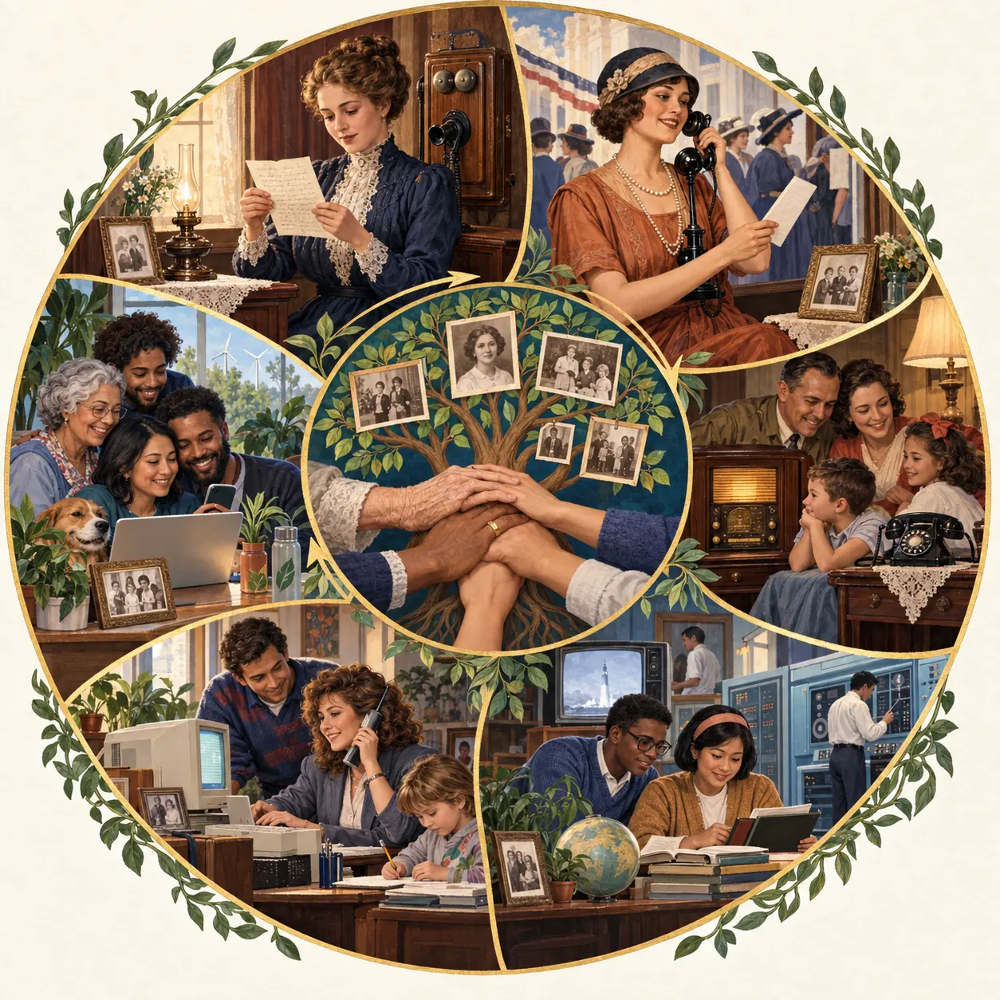
Select an era to connect a visual detail to material culture, nonmaterial culture, values, beliefs, and cultural lag.
The values and standards a group publicly claims. A school may say every student deserves equal opportunity.
What people and institutions routinely do. Unequal funding or access may contradict the stated ideal.
Values that reinforce one another, such as individual achievement, competition, efficiency, and material success.
Tension between cherished values, such as individual privacy and public safety, or equality and competition.
Norms are shared expectations for behavior. They tell people what they should do (prescriptive norms) and should not do (proscriptive norms). Norms vary in seriousness and enforcement.
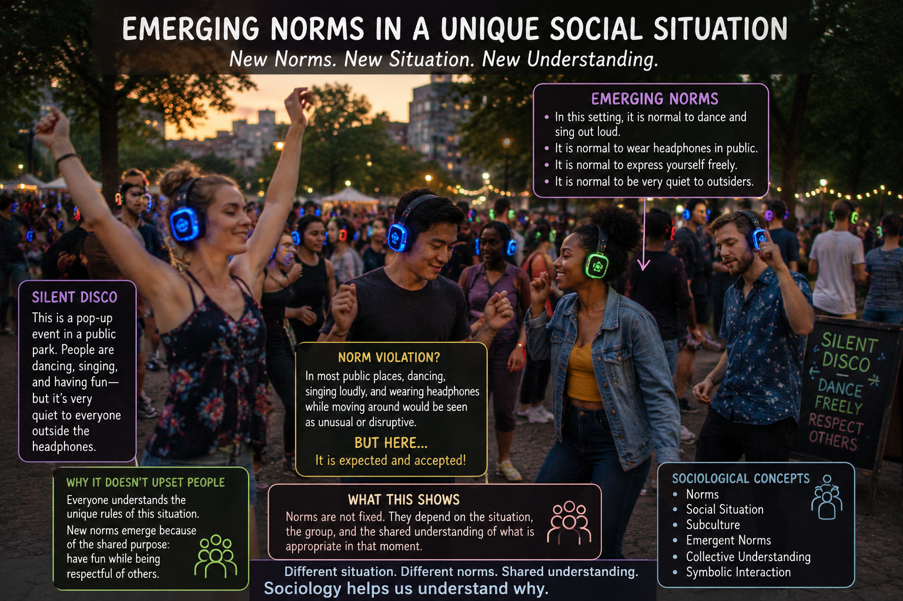
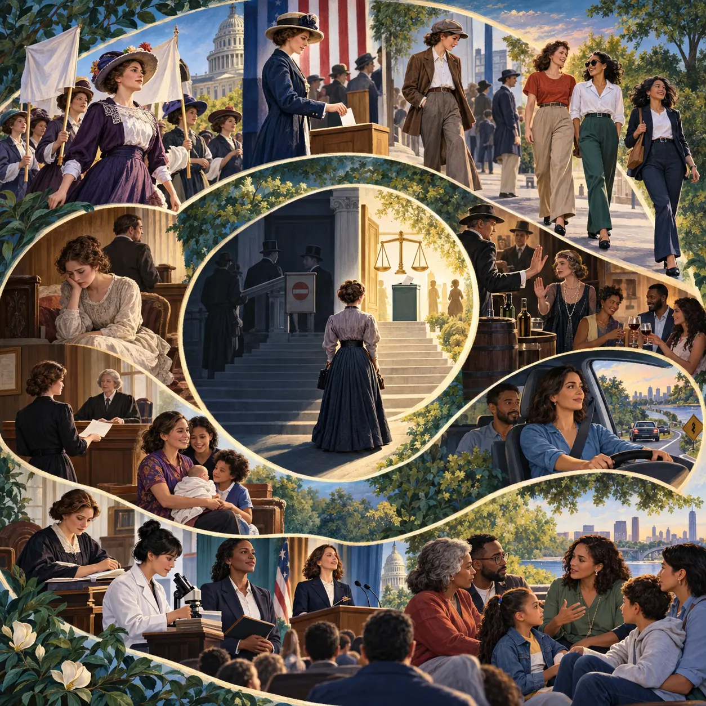
Select a change. Decide whether the image illustrates a folkway, more, law, sanction, value contradiction, or the distance between ideal and real culture.
Eleanor can value democracy, dignity, family security, and equal opportunity even while living in institutions that deny those ideals to many people. That contradiction is sociological evidence, not simply personal hypocrisy: values can be widely praised while power, law, custom, and unequal resources prevent people from experiencing them equally.
Democracy means an equal public voice. Marriage should offer companionship and security. Law should protect people. Ability and effort should open education, work, and leadership.
Women lacked national voting rights until 1920, and formal suffrage did not remove racial voter exclusion. Economic dependence and stigma constrained divorce. Clothing, education, occupations, leadership, and public freedom remained regulated by gender, race, and class.
| Type | Meaning | Example |
|---|---|---|
| Folkway | Everyday convention with mild moral weight | Standing in line or dressing suitably for an occasion |
| More | Norm tied to a group’s moral order | Expectations concerning honesty, care, or exploitation |
| Taboo | Powerful prohibition whose violation evokes strong disgust or condemnation | Practices a society places beyond acceptable discussion or conduct |
| Law | Norm formally written and enforced by government | Traffic rules, labor protections, or criminal law |
National Prohibition made alcohol production and sale a formal legal issue while widespread resistance exposed a conflict between written law and real culture.
The Nineteenth Amendment prohibited voting discrimination based on sex, but racial exclusion and informal sanctions continued to limit real participation.
As cars became ordinary, speed, licensing, seat belts, and impaired driving moved from emerging concerns into formal law and strong moral expectations.
A sanction is a reward or penalty that reinforces norms. A smile is a positive informal sanction; ridicule is a negative informal sanction; an award is formal and positive; a fine is formal and negative.

A moral holiday is a bounded time or place where some everyday rules are relaxed—such as a festival, costume event, or vacation setting. The setting still has boundaries; it is not an absence of all norms.
A subculture shares distinctive norms, language, or practices while remaining within a larger society. Occupational groups, fandoms, religious communities, and youth scenes can form subcultures. A counterculture rejects important values or institutions of the dominant culture and seeks alternatives. Neither term means that every member thinks alike.
Specialized vocabulary, uniforms, ethical rules, status distinctions, humor, and rituals learned through training.
Shared risk, trust, station routines, rank, equipment knowledge, stories, and strong occupational identity.
Formal language, credentials, courtroom roles, professional norms, and insider knowledge shape membership.
Apprenticeship, tools, safety practices, craft knowledge, workplace humor, and reputations create belonging.
Disciplines develop their own theories, methods, conferences, publishing practices, and definitions of evidence.
Occupations make subculture visible because newcomers are not merely taught a task. They learn vocabulary, appearance rules, stories, humor, ethical boundaries, expectations about authority, and ways of recognizing an experienced insider. These patterns can build trust and competence, but they can also exclude outsiders or discourage members from questioning harmful traditions.
Occupational nurses’ unit: distinctive language and norms within the larger society → usually a subculture.
Invitation-only fraternal lodge: bounded membership, ritual, and insider symbols → a subculture; secrecy alone does not make it countercultural.
Movement rejecting core institutions and building alternatives: may be a counterculture, depending on its beliefs and practices.

The 1960s counterculture rejected important elements of consumerism, militarism, conventional dress, sexuality, and authority. Behaviors that attracted ridicule, exclusion, arrest, or moral condemnation then may receive less reaction today. This demonstrates that deviance is not contained inside an object or style: groups attach meanings and sanctions to it. A counterculture is not automatically harmful, criminal, or admirable; sociologists compare its values, power, practices, and consequences.
Groups can also build solidarity around exclusion and dehumanization. Hate symbols communicate belonging to insiders while intimidating targeted outsiders. The Southern Poverty Law Center Hate Map lets students explore organizations the advocacy group classifies as hate and antigovernment extremist groups. Use its definitions and methodology: it is a researched organizational dataset, not an official government census and not proof about every person near a mapped location.
The Hatfield–McCoy feud became a national story, but the familiar image of irrational, backward “hillbillies” is a stereotype: an oversimplified belief applied to a varied group. The violence was real, yet historians place it in a more complicated world of kinship, elections, courts, land, timber, industrial expansion, and uneven state power. Devil Anse Hatfield, for example, was also a landowner and timber entrepreneur—not the one-dimensional figure sold by later popular culture.
Sensational reporting helped turn Appalachian people into a marketable “other.” That representation matters even when no single article or bargain causes exploitation. When outsiders are presumed ignorant, investors, attorneys, employers, and public officials may be treated as the natural experts in negotiations over mineral, timber, labor, and land rights. A stereotype can therefore become a resource for people who already possess more institutional power.
Interactionism: How did “hillbilly” become a symbol that shaped encounters?
Conflict theory: Who could publish the story, write a contract, or profit from land and labor?
Functionalism: What happens when media, courts, markets, and local communities do not share trust?
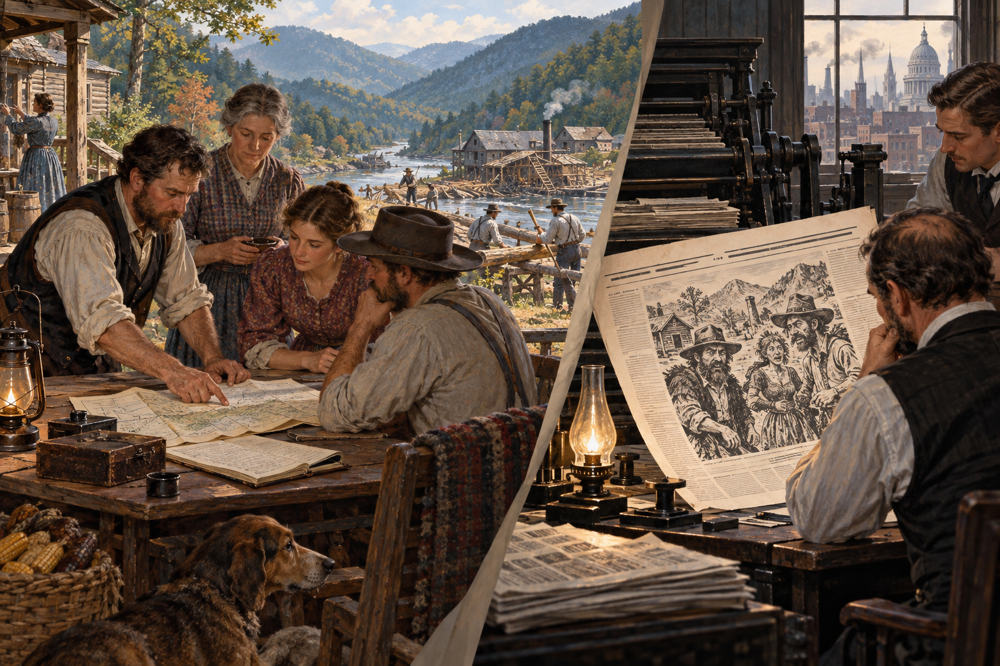
Careful conclusion: National storytelling helped stereotype Appalachia, while extractive industries and absentee ownership created unequal economic relationships. That pattern is supportable; one specific newspaper story directly causing a particular family to lose mining profits requires evidence of the article and transaction.
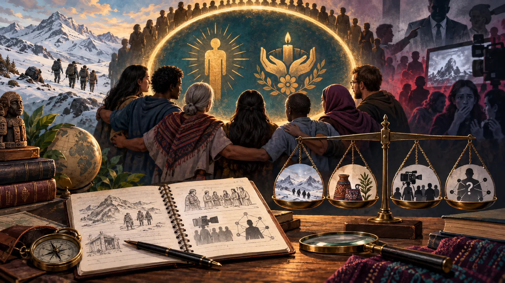
A taboo is a powerful prohibition whose violation can provoke disgust, fear, exclusion, or severe sanction. Taboos are stronger than ordinary folkways. Many societies condemn acts such as necrophilia and nonconsensual cannibalism because they violate human dignity, bodily autonomy, and rules governing the dead. Almost no one engages in these acts; using an extreme taboo to describe an entire group is itself a form of stigmatization.
“Cannibalism” has been used for documented survival emergencies, funerary practices in particular historical societies, violence, and accusations made against outsiders. These contexts are not sociologically interchangeable.
Cultural relativism asks researchers to understand meaning and context before judging. It does not require approval, and it does not erase consent, harm, law, or human rights.
Calling a disliked minority “inhuman,” sexually dangerous, or cannibalistic has historically helped dominant groups justify fear and punishment. The accusation may reveal more about power than about the accused.
Sociological conclusion: claims about elites engaging in ritual cannibalism circulate in conspiracy cultures, but a claim should not enter the textbook as fact without credible, verifiable evidence. Studying why people believe and share it is legitimate sociology.
Discovery or invention adds something new to cultural life. Adoption still requires meaning, access, rules, and trust.
A cultural item or practice spreads between groups through trade, migration, media, tourism, colonization, or networks.
As exchange increases, some cultural differences diminish. The process can widen access while also weakening local practices.
William F. Ogburn’s term for the delay when material technology changes faster than norms, laws, ethics, or institutions adapt.
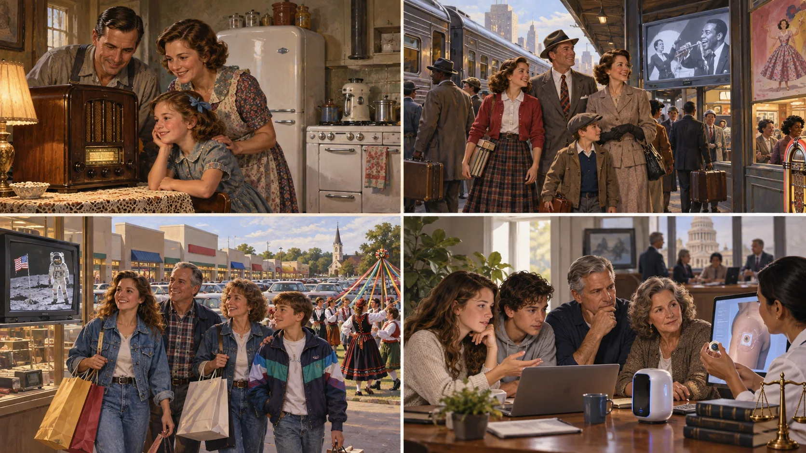
Shared values and norms coordinate behavior, create solidarity, and make institutions predictable. Rituals can integrate a group.
Question: What function does this practice serve, and for whom? A practice can also be dysfunctional.
Groups with more power can define legitimate taste, language, knowledge, beauty, and morality. Cultural rules may make unequal arrangements appear normal.
Question: Who benefits when this meaning becomes dominant, and whose knowledge is discounted?
Culture is produced and revised through everyday interpretation. People learn labels, negotiate identity, and respond to how others define situations.
Question: How do people create this meaning in interaction?

Functionalism: Does the theater create shared stories and leisure? Conflict: Who owns the theater, who appears heroically on screen, and who can afford entry? Interactionism: How do clothing, seating, laughter, and gestures teach the audience how to behave?
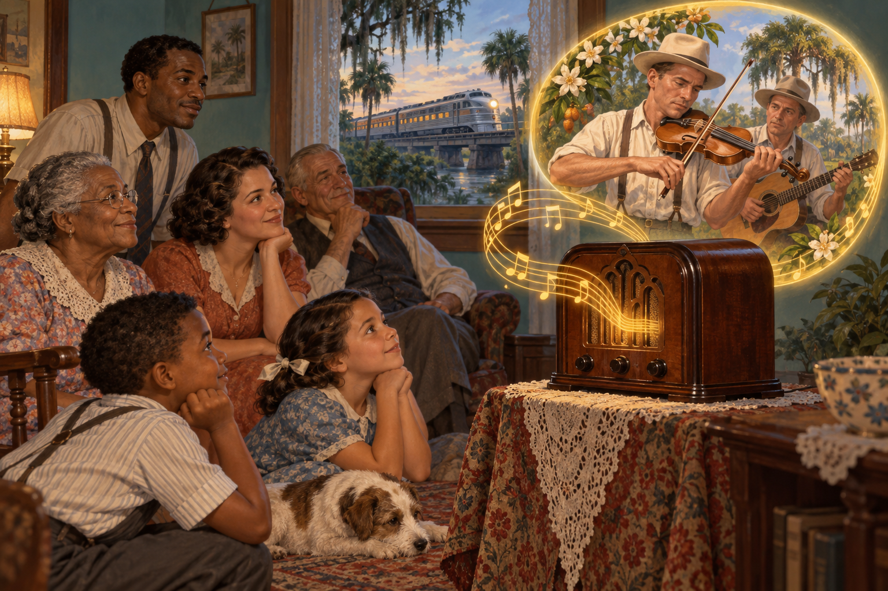
Every known society makes music, but societies differ in what music means, who may perform it, how it travels, and who receives credit and income. A fast fiddle tune can therefore reveal technology, regional identity, cultural diffusion, and inequality at the same time.
Ervin T. Rouse wrote and copyrighted “Orange Blossom Special” in 1938, and Ervin and Gordon Rouse recorded it in 1939. The fiddle imitates a train: rail technology becomes sound, speed becomes a feeling, and a Florida route becomes a portable regional symbol.
Its authorship was later contested in popular memory. Chubby Wise helped make the tune famous and claimed a role in writing it, but the copyright names Rouse. That distinction lets us ask a conflict-theory question without overstating the evidence: how do fame, record companies, touring networks, and access to publicity affect who is remembered and rewarded?
A train, fiddle, recording, and radio are material culture; pride, speed, memory, and authenticity are nonmaterial culture.
Performers and audiences repeatedly create the tune’s meaning until it becomes a shared symbol—a “fiddle player’s anthem.”
Creative labor and commercial power are not distributed equally. Copyright, billing, publicity, and contracts decide whose name and income travel.
Johnny Cash recorded the song for his 1965 album Orange Blossom Special. After learning that Rouse had written it, Cash located him, invited him to appear at a Miami concert, and used the album’s liner notes to tell their meeting. The documented claim is that Cash restored public attention and attribution—not that he legally recovered stolen rights. In sociological terms, a celebrity used cultural capital and a large platform to redirect recognition toward a less powerful creator.
Media note: The video is included for analysis; students can complete the activity from the written description if streaming media is unavailable.
Identify core values, beliefs, symbols, and norms. Show how they appear in ordinary behavior, and apply one theoretical perspective to explain how the cultural system operates.
Slide requirements: Approximately 100–150 words, at least four bold concepts, one purposeful visual, and approximately 3–6 APA in-text citations.
Observe one ordinary setting for ten minutes. Record one object, symbol, value, norm, sanction, and possible contradiction. Then interpret the scene with one of the three theories.
Cash, J. (1965). Orange Blossom Special tore the house down [Liner notes]. On Orange Blossom Special. Columbia Records.
Cherlin, A. J. (2009). The marriage-go-round: The state of marriage and the family in America today. Alfred A. Knopf.
Eble, C. (1996). Slang & sociability: In-group language among college students. University of North Carolina Press.
Fine, G. A., & Kleinman, S. (1979). Rethinking subculture: An interactionist analysis. American Journal of Sociology, 85(1), 1–20.
Flexner, E., & Fitzpatrick, E. (1996). Century of struggle: The woman’s rights movement in the United States (Enl. ed.). Belknap Press of Harvard University Press.
Kyvig, D. E. (1979). Repealing national prohibition. University of Chicago Press.
Noles, R., Hartford, J., & Stuart, M. (2007). Fiddler’s curse: The untold story of Ervin T. Rouse, Chubby Wise, Johnny Cash and the Orange Blossom Special. Centerstream.
The Associated Press. (2026). India seeking to recover the body of an Everest climber known as “Green Boots.” https://apnews.com/article/e64751eb58446d30d2661e518de61935
Ogburn, W. F. (1922). Social change with respect to culture and original nature. B. W. Huebsch.
Lindenbaum, S. (2004). Thinking about cannibalism. Annual Review of Anthropology, 33, 475–498.
National Institute of Standards and Technology. (2024). Artificial intelligence risk management framework: Generative artificial intelligence profile (NIST AI 600-1). U.S. Department of Commerce. https://doi.org/10.6028/NIST.AI.600-1
Sapir, E. (1921). Language: An introduction to the study of speech. Harcourt, Brace.
Read, P. P. (1974). Alive: The story of the Andes survivors. J. B. Lippincott.
Stevenson, D. (1988). The origins of Freemasonry: Scotland’s century, 1590–1710. Cambridge University Press.
Whorf, B. L. (1956). Language, thought, and reality: Selected writings of Benjamin Lee Whorf (J. B. Carroll, Ed.). MIT Press.
Waller, A. R. (1988). Feud: Hatfields, McCoys, and social change in Appalachia, 1860–1900. University of North Carolina Press.
Use the same nine program pathways throughout this book. Here, the section benefit is learning to recognize symbols, norms, subcultures, ethnocentrism, sanctions, and cultural lag.
| College pathway | Section benefit | At work |
|---|---|---|
| 🍎 Education | See classroom language, hidden norms, and cultural differences. | Explain expectations explicitly and design instruction that does not treat one background as the default. |
| 🩺 Medical and nursing | Interpret beliefs about illness, touch, pain, privacy, and authority. | Ask culturally responsive questions while maintaining evidence-based, safe care. |
| 🤲 Caregiving and human services | Recognize how family routines and stigma shape help-seeking. | Build trust and adapt support with clients rather than assuming one “normal” household. |
| 🧠 Counseling and behavioral health | Distinguish cultural difference from dysfunction and trace labeling. | Explore meaning, identity, and support networks without excusing harm. |
| 🦷 Rehabilitation and dental | Understand norms about bodies, disability, independence, and care. | Use respectful language and negotiate treatment routines patients can sustain. |
| 🚒 Public safety | See how symbols, subcultures, stereotypes, and informal sanctions affect encounters. | Interpret behavior in context, communicate clearly, and question biased assumptions. |
| 🔧 Skilled trades | Identify occupational jargon, safety norms, apprenticeship culture, and technology lag. | Socialize newcomers into safe practice and update shop norms as tools change. |
| ✂️ Personal-care services | Analyze beauty standards, identity symbols, touch, and relationship work. | Create an inclusive client experience and avoid imposing personal value judgments. |
| 🔬 STEM | Connect innovation and diffusion to ethics, access, and cultural lag. | Anticipate how different communities may interpret or be affected by a technology. |